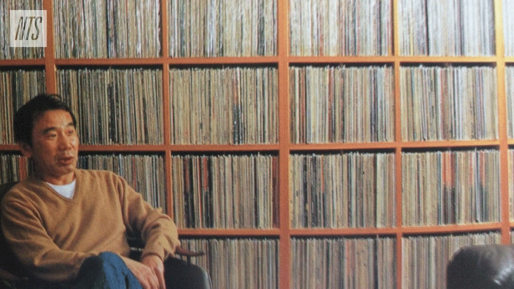

Kafka on the Shore by Haruki Murakami
Kafka on the Shore by Haruki Murakami is a novel that alternates between two main characters, both of these characters embody themes that more or less relate to the story. The first character, "Kafka Tamura," symbolizes something that all humans on Earth go through: the search for purpose and meaning. Kafka is a fifteen-year-old trying to grapple with the existence of a puzzling prophecy and his own personality. He is also followed by a figure known as "Crow," which serves as the vessel or voice of Kafka's inner mind — a representative manifestation of his conscience and subconscious. The presence of Crow offers Kafka guidance, which usually is something that should be followed through.
The second "main character" is "Satoru Nakata," an older man who has lost both his memory and intelligence due to an accident in his childhood. Nakata symbolizes simplicity and even innocence, which contrasts with Kafka’s complexity. While other characters in the story are constantly compelled by chaotic events, Nakata, on the other hand, moves through life quietly, unassuming. He’s able to communicate with cats, and in a sense, embodies detachment from conflicts. While Kafka struggles with life and existential questions, Nakata lives in peace and acceptance, serving as a reminder of simplicity. In my opinion, Nakata was the "fixer" in the story.
Murakami is able to capture the transition from adolescence to adulthood within Kafka on the Shore. Throughout the entire story, there are parts that explore human nature between both conscious and subconscious selves. The transition from adolescence to adulthood isn’t portrayed as a straightforward path but instead is more like a curved line that jumps between outer worlds and inner self.
Another aspect of Murakami's writing that I enjoy throughout all of his novels is his ability to amalgamate an array of artistic and cultural references. Kafka on the Shore draws everything from literature, music, mythology, philosophy, and religion. My favorite example of this is when the novel engages with Ancient Greek myths like Oedipus and Orpheus, bringing up the themes of fate, love, and self-demolition. The novel also references the psychological theories of Freud and Jung, the philosophical texts of Hegel and Marx, and literary works such as the *Tale of Genji* and *Arabian Nights*. These components force the reader to connect the novel with culture and intellectual folklore.
Music plays a huge role in the story (as is in most Murakami stories); it serves as a grounding force for Kafka during his journey. He listens to artists like Bob Dylan, The Beatles, and Prince, using all of this music as a rope that keeps him tied to the world. Often, the music provides Kafka with clarity.
Haruki Murakami's Personal Record Collection

“Closing your eyes isn’t going to change anything. Nothing’s going to disappear just because you can’t see what’s going on. In fact, things will even be worse the next time you open your eyes. That’s the kind of world we live in. Keep your eyes wide open. Only a coward closes his eyes. Closing your eyes and plugging up your ears won’t make time stand still.”
- Haruki Murakami